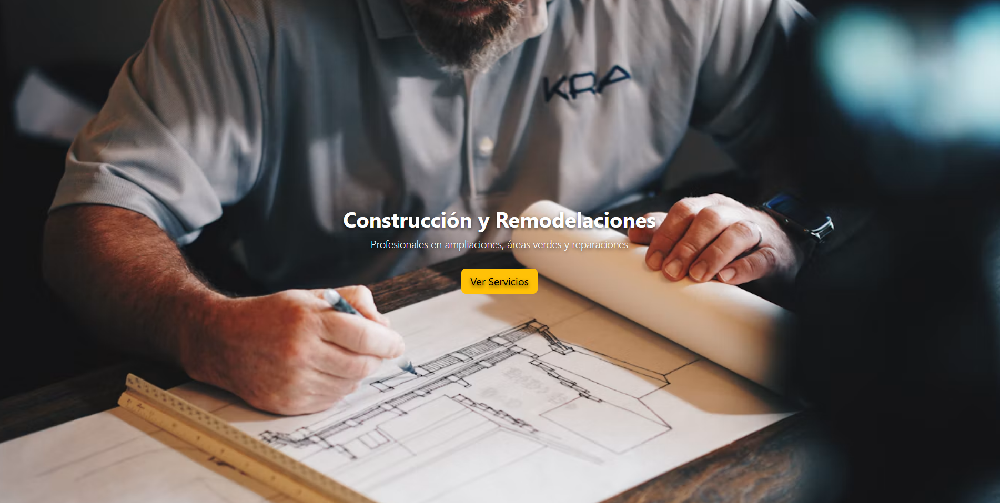
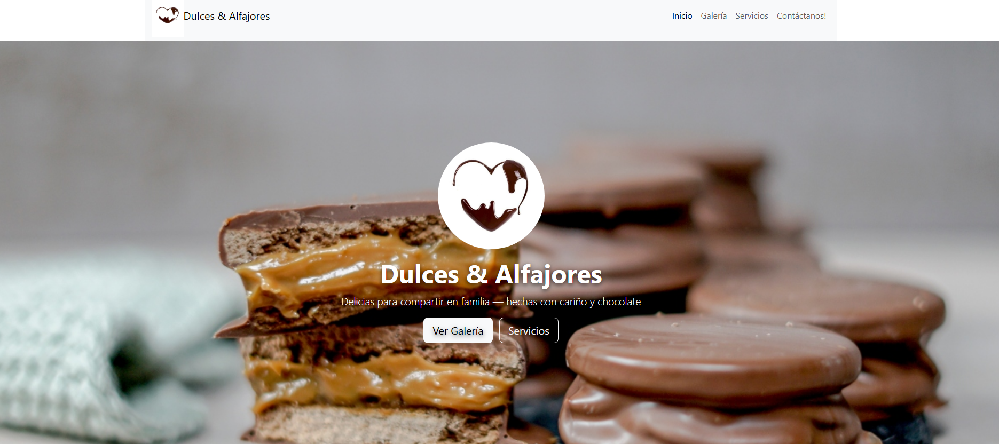

Soluciones web
Esta sección reúne proyectos desarrollados para navegador, con interfaces orientadas al usuario y herramientas enfocadas en resolver necesidades específicas.
Cada proyecto presenta su objetivo, funcionamiento y tecnologías utilizadas, junto con un enlace para explorar la solución cuando está disponible.
Proyectos disponibles
Aplicaciones web y herramientas digitales.
CV Target: adaptación de currículums
Herramienta web orientada a adaptar el currículum según los requisitos de una oferta laboral y destacar la experiencia más relevante para cada postulación.
Problema
Un currículum puede contener experiencia y conocimientos relevantes, pero no siempre presenta esa información de forma alineada con los requisitos de cada oferta laboral. Esto dificulta destacar las competencias más relacionadas con el cargo al que se desea postular.
Solución
CV Target es una herramienta web diseñada para facilitar la adaptación del currículum a una oportunidad laboral específica, orientando la presentación del perfil hacia los aspectos más relevantes para cada postulación.
Enfoque de la herramienta
Currículum
Información profesional como punto de partida.
Oferta laboral
Identificación de requisitos y aspectos relevantes.
Perfil relevante
Busca destacar la experiencia y las competencias relacionadas con la oportunidad.
Landing Pages
Primeros proyectos de desarrollo web enfocados en la presentación de servicios y productos para pequeños negocios.

01. Construcción y Remodelaciones
Landing page para presentar servicios de construcción, remodelación y áreas verdes, con acceso directo a contacto.

02. Confitería
Landing page para presentar productos de confitería, organizar categorías y facilitar el contacto para pedidos.